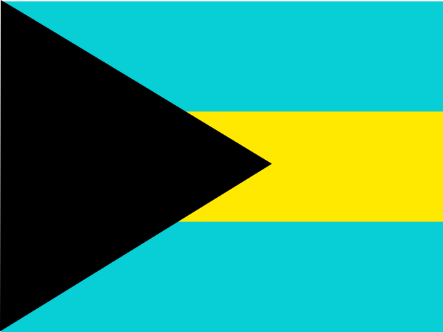

Coverage
Where CoCo works
Every coastal nation a cruising boat can clear into, tracked against the same structured taxonomy. No country gets a shrug and a forum link.
143
Countries in the schema
The full coastal and cruising-relevant list, straight from the product's country table.
9 → 15
Fields tracked per country
Nine core compliance fields today, expanding to fifteen as the taxonomy grows.
Every
Field sourced & dated
Each field carries its own citations, verification date and confidence level — independently, not per country.
All 143 countries will carry published data at public launch. Confidence levels stay visible per field, so you can always see how firm a given requirement is.
The full list
Every country CoCo tracks, alphabetically.
No country matches that filter.

Sample entry
Bahamas
This is a real published entry, unedited. Nine fields, each with its own confidence level, verification date and sources.
| Field | Applies | Confidence | Verified | Sources |
|---|---|---|---|---|
| Cruising Permit | Required for all foreign private pleasure vessels | high | 2026-08-27 | 3 cited |
| Visa | Not required for most nationalities (3 or 8 months) | high | 2026-08-27 | 2 cited |
| Advance Notice | No pre-arrival notice; report at the Port of Entry | medium | 2026-08-27 | 2 cited |
| Q Flag | Required on entering port, until cleared | high | 2026-08-27 | 2 cited |
| Ports of Entry | Clearance only at designated Ports of Entry | high | 2026-08-27 | 2 cited |
| Boat Registration | Flag-state registration must be presented | medium | 2026-08-27 | 2 cited |
| Insurance | Not an entry requirement (marinas may require it) | medium | 2026-09-02 | 2 cited |
| Firearms & Weapons | Must be declared; max 3, calibre up to .308 | high | 2026-08-27 | 2 cited |
| AIS | Required for vessels 50 ft and over | medium | 2026-08-27 | 3 cited |
Cruising Permit
High confidenceA Temporary Cruising Permit is required for all foreign, private, non-commercial pleasure vessels to sail in Bahamian waters; obtained via Inward Declaration/Application at the port of entry or online (Click2Clear / GoOutdoorsBahamas.com).
AIS
Medium confidenceApplies only to foreign vessels 50 ft and over: AIS must be installed, properly functioning and turned on at all times in Bahamian waters (docked, traversing or passing through) under Regulation 40B (effective 1 Jul 2025). Fine of $1,000 for non-compliance. Vessels under 50 ft are exempt.
Method
What counts as a fact
A fact is one field of one country's entry regime, resolved against a fixed taxonomy. Nine fields today, expanding to fifteen. Each is researched, cited and scored on its own — so a country isn't "done", it's a set of fields at known confidence.
That's what makes a per-country count meaningful rather than arbitrary: the denominator is fixed, and every entry declares its own weakest link.
Fixed taxonomy
Cruising Permit · Visa · Advance Notice · Q Flag · Ports of Entry · Boat Registration · Insurance · Firearms & Weapons · AIS
Independent sourcing
Each field carries its own citations — government portals first, cruising references second. A weak field doesn't borrow credibility from a strong one beside it.
Confidence, stated
High, medium or low — and where a claim rests on absence from an official list rather than an explicit statement, the entry says so.
Community corroboration
Where cruisers report something the official record doesn't cover, the field is marked corroborated — and uncorroborated claims are named as such.
Found something out of date?
Rules change without notice. If you've just cleared in somewhere and the entry is wrong, tell us — corrections go in ahead of new countries.